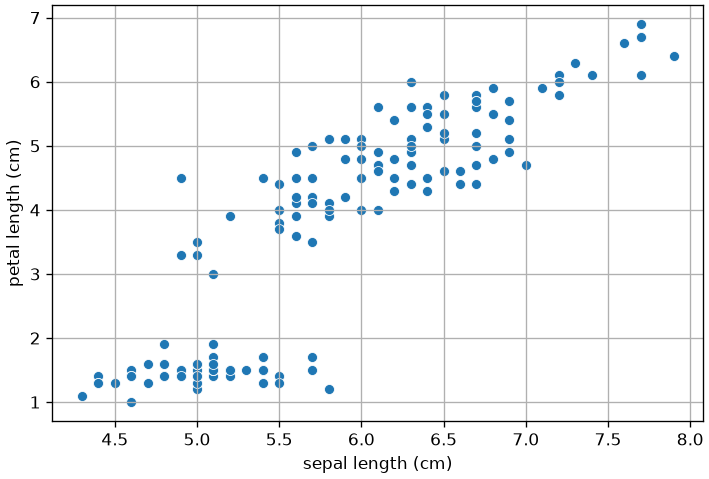
Dimensionality reduction: principal component analysis
So far, we have worked with datasets with a handful of interpretable features. In the real world, we often face datasets with thousands or even millions of features.
- An 800x600 pixel color image has 800 \times 600 \times 3 = 1,440,000 features (pixels).
- A “bag of words” model for text can easily have 50,000 features (one for each word).
This creates two major problems:
- The Curse of Dimensionality: In high-dimensional space, everything is “far apart,” and distance-based models like KNN fail.
- Multicollinearity: Many features are highly redundant (e.g., adjacent pixels in an image).
We cannot just select features (like we did with backward elimination) because every pixel in an image is necessary. Instead, we need to summarize or compress the data.
This is Dimensionality Reduction. Our goal is to transform our data from d (e.g., 1,440,000) dimensions to a new, smaller set of k (e.g., 100) “smart” features, while losing the least amount of information possible.
The most common way to do this is Principal Component Analysis (PCA).
Feature Selection vs Feature Reduction
We have seen how, when many variables are available, it makes sense to select a subset of such variables. In regression analysis, in particular, we have seen how, when features are highly correlated, we should discard some of them to reduce collinearity. Indeed, if two variables x and y are highly correlated, one of the two is redundant to a given extent, and we can ignore it.
We have seen how variables can be selected in different ways:
- By looking at the correlation matrix, we can directly find those pairs of variables which are highly correlated;
- When defining a linear or logistic regressor, we can remove those variables with a high p-value. We have seen that these are variables which do not contribute significantly to the prediction of the dependent variable, given all other variables present in the regressor;
- Techniques such as Ridge and Lasso regression allow to perform some form of variable (or feature) selection, setting very low or zero coefficients for variables which do not contribute significantly to regression.
In general, however, when we discard a set of variables, we throw away some informative content, unless the variables we are removing can be perfectly reconstructed from the variables we are keeping, e.g., because they are linear combinations of other variables.
Instead of selecting a subset of features to work with, feature reduction techniques aim to find a new set of features which summarize the original set of features losing a small amount of information, while maintaining a limited number of dimensions.
Feature Reduction Example
Let us consider the Iris dataset. In particular, we will consider two features: sepal length and petal length:
We can see from the plot above that the two features are highly correlated. Let us compute the Pearson coefficient and the related p-value:
PearsonRResult(statistic=np.float64(0.8717537758865832), pvalue=np.float64(1.0386674194497531e-47))Let’s say we want to reduce the number of features (e.g., for computational reasons). We could think of applying feature selection and choose one fo the two, but we would surely loose some information. Instead, we could think of a linear projection of the data into a single dimension such that we loose the least possible amount of information.
To avoid any dependence on the units of measures and on the positioning of the points in the space, let’s first standardize the data:
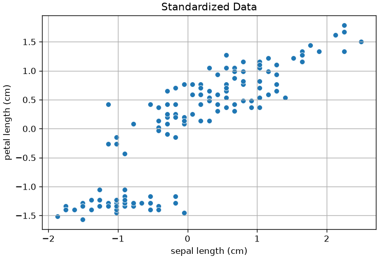
Transforming the 2D data to a single dimension with a linear transformation can be done with the following expression:
z = u_1 x_1 + u_2 x_2 = \mathbf{u}^T\mathbf{x}
Note that this is equivalent to projecting point (x_1,x_y) to a line passing through the origin and with the same direction on \mathbf{u}.
Once we choose a set of (u_1,u_2), we obtain a different projection, as in the example below, where we project the data to different random lines passing through the origin:
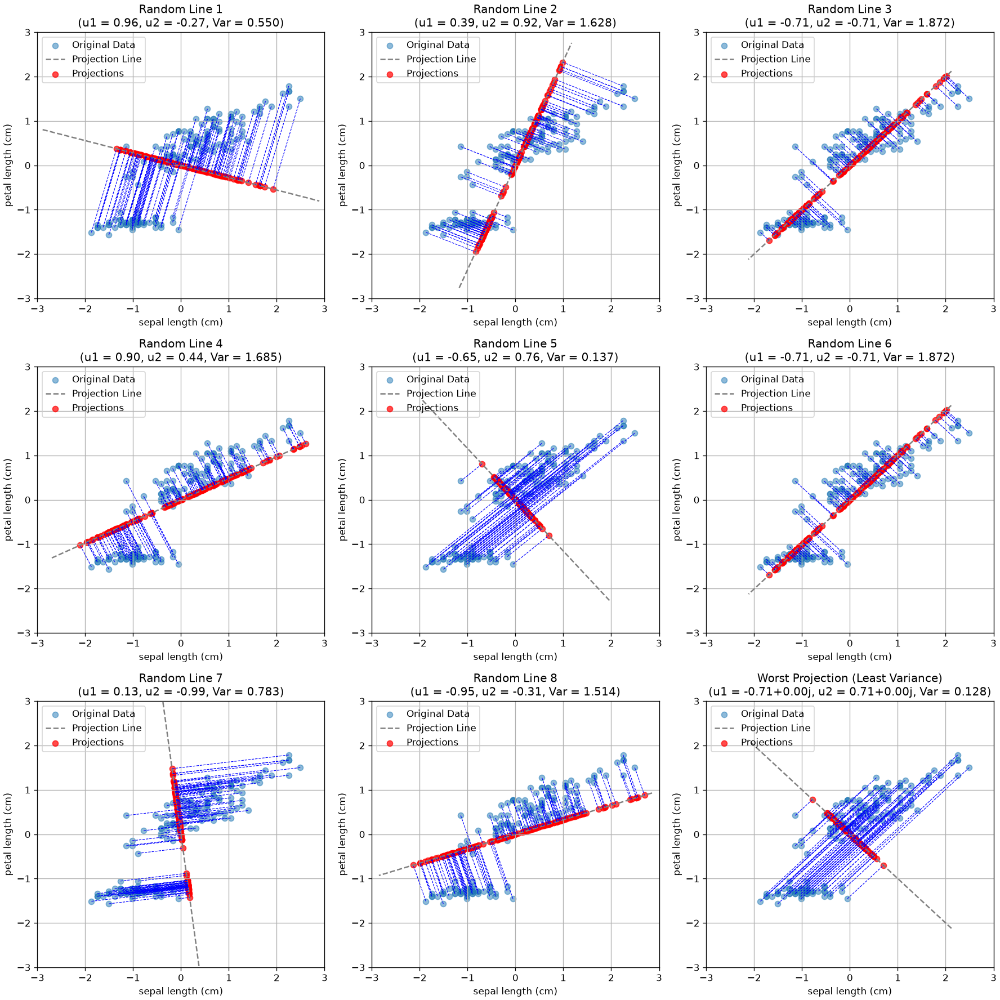
As can be seen, not all projections are the same. Indeed, some of them tend to project the points in a space in which they are very close to each other, while others allow for more “space” between the points.
Intuitively, we would like to project points in a way that they keep their distinctiveness as much as possible. In practice, we can quantify distinctiveness with the variance of the projected data.
General Formulation
We have seen a simple example in the case of two variables. Let us now discuss the general formulation in the case of D-dimensional variables.
Let \{\mathbf{x}_n\} be a set of N observations, where n=1,\ldots,N, and \mathbf{x}_n is a vector of dimensionality D. We will define Principal Component Analysis as a projection of the data to M \lt D dimensions such that the variance of the projected data is maximized.
NOTE: to avoid any influence by the individual variances along the original axes, we will assume that the data is standardized.
We will first consider the case in which M=1. In this case, we want to find a D-dimensional vector \mathbf{u}_1 such that, projecting the data to this vector, variance is maximized. Without loss of generality, we will choose \mathbf{u}_1 such that \mathbf{u}_1^T\mathbf{u}=1. This corresponds to choosing \mathbf{u}_1 as a unit vector, which makes sense, as we are interested in the direction of the projection. We will find this assumption useful later.
Let \overline{\mathbf{x}} be the sample mean:
\overline{\mathbf{x}} = \frac{1}{N}\sum_{n=1}^N x_n
The data covariance matrix \mathbf{S} will be:
\mathbf{S} = \frac{1}{N} \sum_{n=1}^N (\mathbf{x}_n - \overline{\mathbf{x}}) (\mathbf{x}_n - \overline{\mathbf{x}})^T
We know that projecting a data point to \mathbf{u}_1 is done simply by the dot product:
\mathbf{u}_1^T \mathbf{x}
It is easy to see that the mean of the projected data is:
\mathbf{u}_1^T \overline{\mathbf{x}}
Its variance is:
\frac{1}{N} \sum_{n=1}^N (\mathbf{u}_1^T \mathbf{x}_n - \mathbf{u}_1^T \overline{\mathbf{x}}) (\mathbf{u}_1^T \mathbf{x}_n - \mathbf{u}_1^T \overline{\mathbf{x}})^T = \mathbf{u}_1^T \frac{1}{N} \sum_{n=1}^N (\mathbf{x}_n - \overline{\mathbf{x}}) ( \mathbf{x}_n - \overline{\mathbf{x}})^T \mathbf{u}_1 = \mathbf{u}_1^T \mathbf{S}\mathbf{u}_1
To find an appropriate \mathbf{u}_1, we need to maximize the variance of the projected data with respect to \mathbf{u}_1. The optimization problem can be formalized as follows:
\arg\max \{\mathbf{u}_1^T\mathbf{S}\mathbf{u_1}\} \text{ subject to } \mathbf{u}_1^T\mathbf{u}_1=1
Note that the constraint \mathbf{u}_1^T\mathbf{u}_1=1 is necessary. Without it, we could arbitrarily increase the variance by choosing vectors \mathbf{u}_1 with large modules, hence \mathbf{u}_1^T\mathbf{u}_1 \to +\infty.
We will not see how this optimization problem is solved in details, but it can be shown that the variance is maximized when:
\mathbf{u}_1^T \mathbf{S} \mathbf{u}_1 = \lambda_1
Note that this is equivalent to:
\mathbf{S} \mathbf{u}_1 = \lambda_1 \mathbf{u}_1
From the result above, we find out that:
- The solution \mathbf{u}_1 is an eigenvector of \mathbf{S}. The related eigenvalue \lambda_1 is the variance along that dimension;
- Since we want to maximize the variance, among all eigenvectors, we should choose the one with the largest eigenvalue \lambda_1.
The vector \mathbf{u}_1 will be the first principal component of the data.
We can proceed in an iterative fashion to find the other components. To obtain a valid base (a new reference system), we will choose the next component \mathbf{u}_2 such that \mathbf{u}_2 \perp \mathbf{u}_1. We can hence identify the second principal component by choosing the vector \mathbf{u}_2 with maximizes the variance among all vectors which are orthogonal to \mathbf{u}_1.
In practice, it can be shown that the M principal components can be found by choosing the M eigenvectors \mathbf{u}_1, \ldots, \mathbf{u}_M of the covariance matrix \mathbf{S} corresponding to the largest eigenvectors \lambda_1, \ldots, \lambda_M.
Let us define the matrix W as follows:
\mathbf{W} = \left(\begin{matrix} \mathbf{u}_1 \\ \mathbf{u}_2 \\ \ldots \\ \mathbf{u}_M \\ \end{matrix}\right) = \left(\begin{matrix} u_{11} & u_{12} & \ldots & u_{1D} \\ u_{21} & u_{22} & \ldots & u_{2D} \\ \ldots \\ u_{M1} & u_{M2} & \ldots & u_{MD} \\ \end{matrix}\right)
where u_{ij} is the j^{th} component of vector \mathbf{u}_i.
Let:
\mathbf{X} = \left(\begin{matrix} \mathbf{x}_1 \\ \mathbf{x}_2 \\ \ldots \\ \mathbf{x}_N \\ \end{matrix}\right) = \left(\begin{matrix} x_{11} & x_{12} & \ldots & x_{1D} \\ x_{21} & x_{22} & \ldots & x_{2D} \\ \ldots \\ x_{N1} & x_{N2} & \ldots & x_{ND} \\ \end{matrix}\right)
be the [N \times D] data matrix.
We can project the data matrix X to the principal components with the following formula:
\mathbf{Z} = \mathbf{X} \mathbf{W}^T
\mathbf{Z} will be an [N \times M] matrix in which the i^{th} row denotes the i^{th} element of the dataset projected to the PCA space.
We will call \mathbf{Z} latent variables as they are not observed and encode properties of the data.
In geometrical terms, the PCA performs a rotation of the D-dimensional data around the center of the data in a way that:
- The new axes are sorted by variance;
- The projected data is uncorrelated.
Back to Our Example
We now have the computational tools to fully understand our example. Let us plot the data again. We will consider the mean-centered data:
standardized_data.shape(150, 4)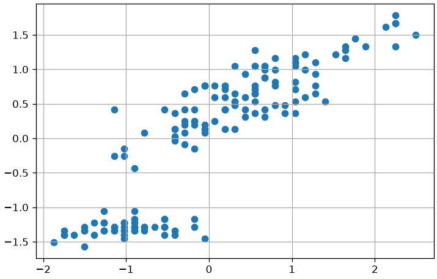
We have seen that the covariance matrix plays a central role in PCA. The covariance matrix of the original data will be as follows in our case:
array([[1.00671141, 0.87760447],
[0.87760447, 1.00671141]])The eigvenvalues and eigenvectors will be as follows:
Eigenvalues: [0.12910694 1.88431588]
Eigenvectors:
[[-0.70710678 0.70710678]
[-0.70710678 -0.70710678]]The rows of the eigenvector matrix identify two principal components. Let us re-order the principal components so that eigenvalues are descending (we want the first principal component to have the largest value):
Eigenvalues: [1.88431588 0.12910694]
Eigenvectors:
[[-0.70710678 -0.70710678]
[-0.70710678 0.70710678]]The two components identify two directions along which we can project our data, as shown in the following plot:
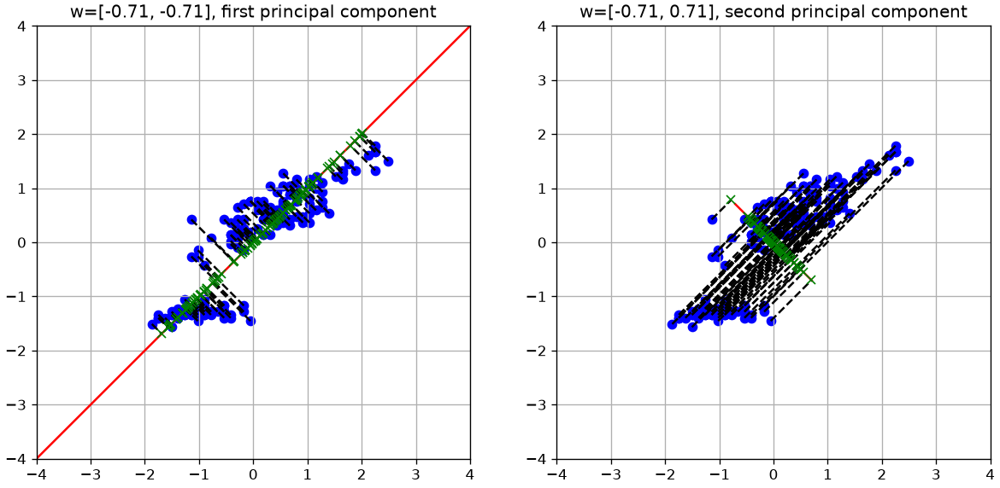
The eigenvectors can also be interpreted as vectors in the original space. Getting back to our 2D example, they would be shown as follows:
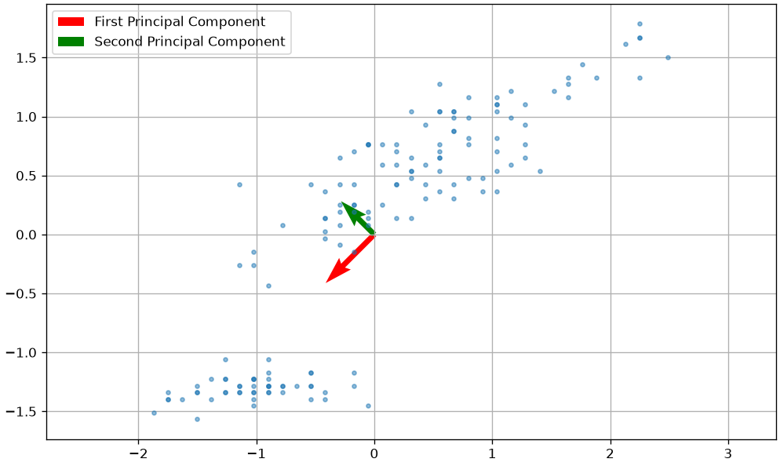
The two principal components denote the main directions of variation within the data. In the plot above, the vector sizes are proportional to the related eigenvalues (hence the variance).
As we can see, the two directions are orthogonal. We can also project the data maintaining the original dimensionality without truncating matrix \mathbf{W} (in practice we set M=D) with:
\mathbf{Z} = \mathbf{X}\mathbf{W}^T
This process can also see as rotating the data in a way that the the first principal component becomes the new x axis, while the second principal component becomes the y axis. In this context, \mathbf{W} can be seen as a rotation matrix. The plot below compares the original and rotated data:
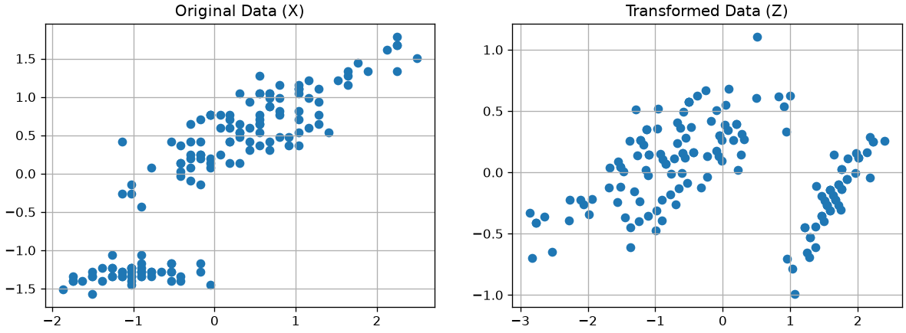
We can see the projection to the first principal component in two stages:
- Rotating the data;
- Dropping the y axis.
Note that the same reasoning can be seen in 3D as shown in the following example:
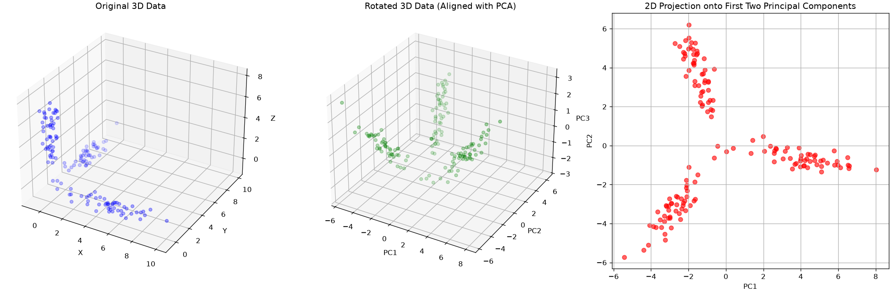
PCA for data whitening
It can also be seen that PCA transforms the original data with a given covariance matrix \Sigma to a new set of data (with new axes, the principal components), such that its covariance matrix \Sigma' is a diagonal matrix. This means that the new variables are now decorrelated.
Intuitively, this makes sense: we rotated the data so that the new axes are aligned to main directions of variation and we constructed principal components to be orthogonal to each other.
This process is also called whitening transformation. An example of this property is shown below:
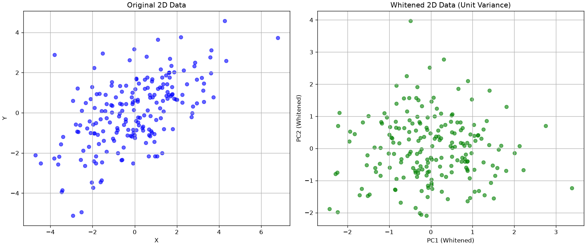
(array([[3.60543087, 1.84308349],
[1.84308349, 2.83596216]]),
array([[ 1.00000000e+00, -6.92704504e-16],
[-6.92704504e-16, 1.00000000e+00]]))This whitening process can be useful when we need to make sure that the input variables are decorrelated. For instance, consider the case in which we need to fit a linear regression but we have multiple correlated variables. Pre-processing data with PCA would make sure that the input variables are decorrelated, hence removing any instability during fitting, but it should be also kept in mind that the linear regression would become less interpretable because of the PCA transformation.
Choosing an Appropriate Number of Components
We have seen how PCA allows to reduce the dimensionality of the data. In short, this can be done by computing the first M eigenvalues and the associated eigenvectors.
In some cases, it is clear what is the value of M we need to set. For example, in the case of sorting Fisher’s Iris, we set M=1 because we needed a scalar number. In other cases, we would like to reduce the dimensionality of the data, while keeping a reasonable amount of information about the original data.
We have seen that the variance is related to the MSE reprojection error and hence to the informative content. We can measure how much information we are retaining by selecting M components by measuring the cumulative variance of the first M components.
We will now consider as an example the whole Fisher Iris dataset, which has four features. The four Principal Components will be as follows:
| sepal length (cm) | sepal width (cm) | petal length (cm) | petal width (cm) | |
|---|---|---|---|---|
| components | ||||
| z1 | 0.361387 | 0.656589 | -0.582030 | 0.315487 |
| z2 | -0.084523 | 0.730161 | 0.597911 | -0.319723 |
| z3 | 0.856671 | -0.173373 | 0.076236 | -0.479839 |
| z4 | 0.358289 | -0.075481 | 0.545831 | 0.753657 |
The covariance matrix of the transformed data will be as follows:
| z1 | z2 | z3 | z4 | |
|---|---|---|---|---|
| z1 | 4.23 | 0.00 | 0.00 | 0.00 |
| z2 | 0.00 | 0.24 | -0.00 | 0.00 |
| z3 | 0.00 | -0.00 | 0.08 | -0.00 |
| z4 | 0.00 | 0.00 | -0.00 | 0.02 |
As we could expect, the covariance matrix is diagonal because the new features are decorrelated. We also note that the principal components are sorted by variance. We will define the variance of the data along the z_i component as:
var(z_i)
The total variance is given by the sum of the variances:
V = var(z_1) + var(z_2) + \ldots + var(z_D)
More in general, we will define:
V(n) = var(z_1) + var(z_2) + \ldots + var(z_n)
Hence V=V(D).
In our example, the total variance V will be:
4.57We can quantify the fraction of variance explained by each component n as follows:
\frac{var(z_n)}{V(D)}
If we compute such value for all n, we obtain the following vector in our example:
array([0.92461872, 0.05306648, 0.01710261, 0.00521218])In practice, it is common to visualize the explained variance ratio in a scree plot:
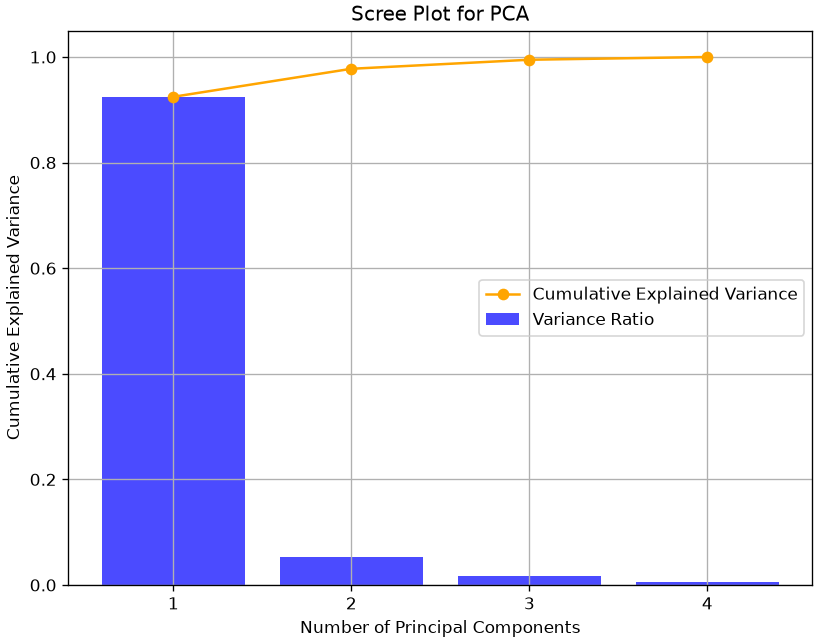
As we can see, the first component retains 92.46\% of the variance, while the second one retains only 5.3\% of the variance. It is common to also look at the cumulative variance ratio, defined as:
\frac{V(n)}{V(D)}
In our case:
array([0.92461872, 0.97768521, 0.99478782, 1. ])The vector above tell us that considering the first two components accounts for about 97.77\% of the variance.
This approach can guide us in choosing the right number of dimensions to keep, selecting a budget of the variance we wish to be able to retain.
Interpretation of the Principal Components: Loading Plots
When we transform data with PCA, the new variables have a less direct interpretation. Indeed, if a given variable is a linear combination of other variables, it is not straightforward to assign a meaning to each component.
However, we know that the first components are the ones which contain most of the variance. Hence, inspecting the weights that each of these components given to the original features can give some insights into which of the original features are more relevant. In this context, the weights of the principal components are also called loadings. Loadings with large absolute values are more influential in determining the value of the principal components.
In practice, we can assess the relevance of features with a loading plot, which represents each original variable as a 2D point of coordinates given by the loadings corresponding to the first two principal components. Let us show the loading plot for our example:
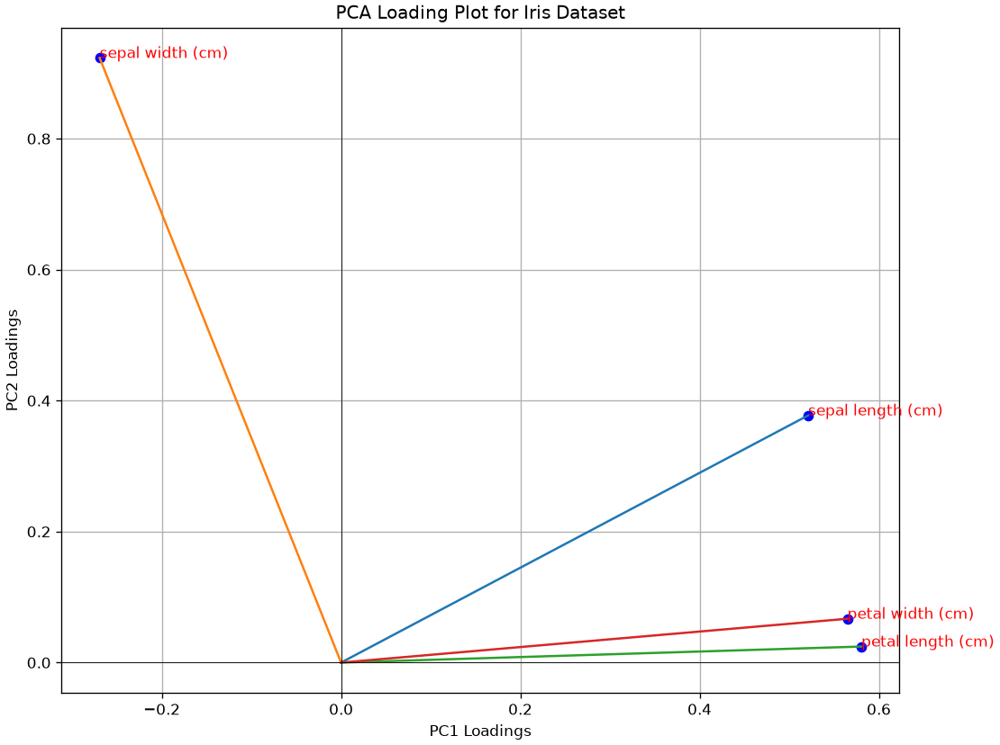
In a loading plot:
- variables that cluster together are positively correlated, while variables on opposite sides may be negatively correlated;
- variables which are further from the origin have higher loadings, so they are more influential in the computation of the PCA.
A loading plot can also be useful to perform feature selection. For instance, from the plot above all variables seem to be influential, but petal width and petal length are correlated. We could think of using as a subset of variables sepal width, sepal length and one of the other two (e.g., petal length).
Laboratory: Applications of PCA
PCA has several applications in data analysis. We will summarize the main ones in the following.
Dimensionality Reduction and Visualization
We have seen that data can be interpreted as a set of D-dimensional points. When D=2, it is often useful to visualize the data through a scatterplot. This allows us to see how the data distributes in the space. When D>2, we can show a series a scatterplot (a pairplot or scattermatrix). However, when D is very large, it is usually unfeasible to visualize data with all possible scatterplots.
In these cases, it can be useful to transform the data with PCA and then visualize the data points as 2D points in the space identified by the first two principal components.
We will show an example on the multidimensional dataset DIGITS. The dataset contains small images of resolution 8 \times 8 pixels representing handwritten digits from 0 to 9. We can see the dataset as containing 64 variables. Each variable indicates the pixel value at a specific location.
from sklearn.datasets import load_digits
digits=load_digits()
plt.figure(figsize=(12,4))
for i in range(9):
plt.subplot(2,5,i+1)
plt.imshow(digits.data[i].reshape((8,8)),cmap='gray')
plt.axis('off')
plt.show()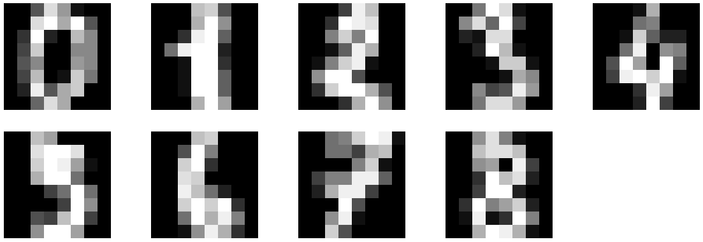
We can visualize the data with PCA by first projecting the data to M=2 principal components, then plotting the transformed data as 2D points.
pca=PCA(n_components=2)
pca.fit(digits.data)
Y=pca.transform(digits.data)
plt.figure(figsize=(8,8))
legend = []
for c in np.unique(digits.target):
plt.plot(Y[digits.target==c,0],Y[digits.target==c,1],'o')
legend.append(c)
plt.legend(legend)
plt.grid()
plt.axis('equal')
plt.show()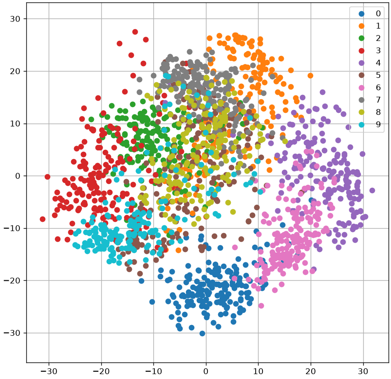
Data Decorrelation - Principal Component Regression
PCA is also useful when we need to fit a linear regressor and we are in the presence of a dataset with multi-collinearity.
Let us consider the auto_mpg dataset:
from scipy.stats import zscore
from statsmodels.formula.api import ols
import pandas as pd
column_names = ["mpg", "cylinders", "displacement", "horsepower", "weight", "acceleration", "model_year", "origin", "car_name"]
data = pd.read_csv(DATA + "auto_mpg.data", sep=r"\s+", names=column_names, na_values="?")
data = data[["displacement", "cylinders", "horsepower", "weight", "acceleration", "model_year", "origin", "mpg"]]
data| displacement | cylinders | horsepower | weight | acceleration | model_year | origin | mpg | |
|---|---|---|---|---|---|---|---|---|
| 0 | 307.0 | 8 | 130.0 | 3504 | 12.0 | 70 | 1 | 18.0 |
| 1 | 350.0 | 8 | 165.0 | 3693 | 11.5 | 70 | 1 | 15.0 |
| 2 | 318.0 | 8 | 150.0 | 3436 | 11.0 | 70 | 1 | 18.0 |
| 3 | 304.0 | 8 | 150.0 | 3433 | 12.0 | 70 | 1 | 16.0 |
| 4 | 302.0 | 8 | 140.0 | 3449 | 10.5 | 70 | 1 | 17.0 |
| ... | ... | ... | ... | ... | ... | ... | ... | ... |
| 393 | 140.0 | 4 | 86.0 | 2790 | 15.6 | 82 | 1 | 27.0 |
| 394 | 97.0 | 4 | 52.0 | 2130 | 24.6 | 82 | 2 | 44.0 |
| 395 | 135.0 | 4 | 84.0 | 2295 | 11.6 | 82 | 1 | 32.0 |
| 396 | 120.0 | 4 | 79.0 | 2625 | 18.6 | 82 | 1 | 28.0 |
| 397 | 119.0 | 4 | 82.0 | 2720 | 19.4 | 82 | 1 | 31.0 |
398 rows × 8 columns
If we try to fit a linear regressor with all variables, we will find multicollinearity:
from statsmodels.formula.api import ols
ols("mpg ~ displacement + cylinders + horsepower + weight + acceleration + model_year + origin", data).fit().summary().tables[1]| coef | std err | t | P>|t| | [0.025 | 0.975] | |
| Intercept | -17.2184 | 4.644 | -3.707 | 0.000 | -26.350 | -8.087 |
| displacement | 0.0199 | 0.008 | 2.647 | 0.008 | 0.005 | 0.035 |
| cylinders | -0.4934 | 0.323 | -1.526 | 0.128 | -1.129 | 0.142 |
| horsepower | -0.0170 | 0.014 | -1.230 | 0.220 | -0.044 | 0.010 |
| weight | -0.0065 | 0.001 | -9.929 | 0.000 | -0.008 | -0.005 |
| acceleration | 0.0806 | 0.099 | 0.815 | 0.415 | -0.114 | 0.275 |
| model_year | 0.7508 | 0.051 | 14.729 | 0.000 | 0.651 | 0.851 |
| origin | 1.4261 | 0.278 | 5.127 | 0.000 | 0.879 | 1.973 |
Indeed, some variables have a large p-value, probably because they are correlated with the others.
To perform Principal Component Regression, we can first compute PCA on the independent variables, then fit a linear regressor. We will choose M=4 principal components:
pca = PCA(n_components=4)
dd = data.dropna()
pca.fit(dd.drop('mpg', axis=1))
zz = pca.transform(dd.drop('mpg', axis=1))
data2 = pd.DataFrame({
f"z{i+1}": zz[:,i]
for i in range(zz.shape[1])
})
data2=data2.join(dd['mpg'])
#print("Cumulative explained variance:", pca.explained_variance_ratio_.cumsum())
# Get explained variance ratios
explained_variance_ratio = pca.explained_variance_ratio_
# Calculate cumulative explained variance
cumulative_explained_variance = np.cumsum(explained_variance_ratio)
# Plot scree plot with both bar plot for variance and line plot for cumulative explained variance
plt.figure(figsize=(8, 6))
# Bar plot for explained variance ratio
plt.title('Scree Plot for PCA')
plt.xlabel('Principal Component')
plt.ylabel('Explained Variance Ratio')
plt.xticks(np.arange(1, len(explained_variance_ratio) + 1))
# Line plot for cumulative explained variance
plt.plot(range(1, len(cumulative_explained_variance) + 1), cumulative_explained_variance, marker='o', color='orange', label='Cumulative Explained Variance')
plt.xlabel('Number of Principal Components')
plt.ylabel('Cumulative Explained Variance')
# Show legend
plt.legend()
plt.grid()
plt.show()
ols("mpg ~ z1 + z2 + z3 + z4", data2).fit().summary()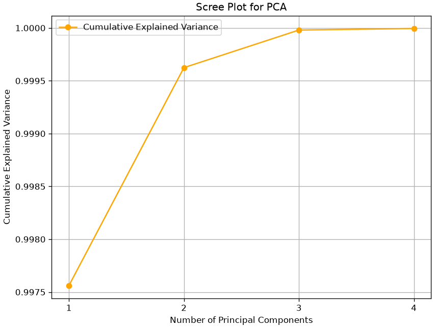
| Dep. Variable: | mpg | R-squared: | 0.492 |
| Model: | OLS | Adj. R-squared: | 0.487 |
| Method: | Least Squares | F-statistic: | 92.20 |
| Date: | Sat, 26 Sep 2026 | Prob (F-statistic): | 9.24e-55 |
| Time: | 16:23:13 | Log-Likelihood: | -1207.7 |
| No. Observations: | 386 | AIC: | 2425. |
| Df Residuals: | 381 | BIC: | 2445. |
| Df Model: | 4 | ||
| Covariance Type: | nonrobust |
| coef | std err | t | P>|t| | [0.025 | 0.975] | |
| Intercept | 23.3607 | 0.283 | 82.480 | 0.000 | 22.804 | 23.918 |
| z1 | -0.0051 | 0.000 | -15.346 | 0.000 | -0.006 | -0.004 |
| z2 | -0.0320 | 0.007 | -4.373 | 0.000 | -0.046 | -0.018 |
| z3 | -0.0552 | 0.018 | -3.138 | 0.002 | -0.090 | -0.021 |
| z4 | 0.8815 | 0.086 | 10.234 | 0.000 | 0.712 | 1.051 |
| Omnibus: | 3.702 | Durbin-Watson: | 1.125 |
| Prob(Omnibus): | 0.157 | Jarque-Bera (JB): | 3.435 |
| Skew: | 0.214 | Prob(JB): | 0.179 |
| Kurtosis: | 3.174 | Cond. No. | 860. |
Notes:
[1] Standard Errors assume that the covariance matrix of the errors is correctly specified.
While the result is not as interpretable as it was before, this technique may be useful in the case of predictive analysis.
Data Compression
Now let’s see a simple example of data compression using PCA. In particular, we will consider the case of compressing images. An image can be seen as high-dimensional data, where the number of dimensions is equal to the number of pixels. For example, an RGB image of size 640 \times 480 pixels has 3 \cdot 640 \cdot 480=921600 dimensions.
We expect that there will be redundant information in all these dimensions. One method to compress images is to divide them into fixed-size blocks (e.g., 8 \times 8). Each of these blocks will be an element belonging to a population (the population of 8 \times 8 blocks of the image).
Assuming that the information in the blocks is highly correlated, we can try to compress it by applying PCA to the sample of blocks extracted from our image and choosing only a few principal components to represent the content of the blocks.
We will consider the following example image:
from sklearn.datasets import load_sample_image
flower = load_sample_image('flower.jpg')
print("Image Size:",flower.shape)
print("Number of dimensions:",np.prod(flower.shape))
plt.imshow(flower)
plt.axis('off')
plt.show()Image Size: (427, 640, 3)
Number of dimensions: 819840We will divide the image into RGB blocks of size 8 \times 8 \times 3 (these are 8 \times 8 RGB images). These will look as follows:
tiles = np.split(flower.ravel(),4270)
tiles=np.stack(tiles)
tiles.shape
plt.figure(figsize=(12,8))
plt.subplot(141)
plt.imshow(tiles[1855].reshape(8,8,3))
plt.axis('off')
plt.subplot(142)
plt.imshow(tiles[2900].reshape(8,8,3))
plt.axis('off')
plt.subplot(143)
plt.imshow(tiles[1856].reshape(8,8,3))
plt.axis('off')
plt.subplot(144)
plt.imshow(tiles[960].reshape(8,8,3))
plt.axis('off')
plt.show()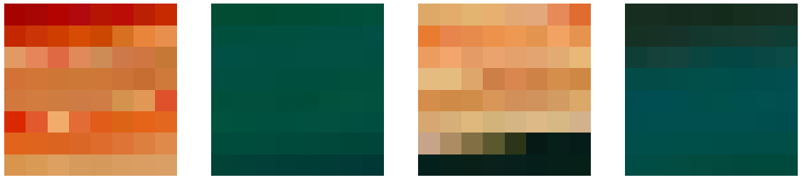
If we compute the PCA of all blocks, we will obtain the following cumulative variance ratio vector:
pca=PCA()
pca.fit(tiles)
np.cumsum(pca.explained_variance_ratio_)[:32]array([0.72033381, 0.80549514, 0.88473859, 0.91106294, 0.92773699,
0.94002703, 0.94742983, 0.95262255, 0.95724079, 0.96138202,
0.96493482, 0.96813033, 0.97074766, 0.97304418, 0.97502489,
0.9767685 , 0.97827391, 0.97961606, 0.98080081, 0.98195036,
0.9829869 , 0.98399274, 0.98491241, 0.98570779, 0.98649071,
0.98719462, 0.98779926, 0.98835149, 0.98888528, 0.98937603,
0.98983658, 0.99027875])# Bar plot for explained variance ratio
explained_variance_ratio = pca.explained_variance_ratio_
cumulative_explained_variance = explained_variance_ratio.cumsum()
plt.title('Scree Plot for PCA')
plt.xlabel('Principal Component')
plt.ylabel('Explained Variance Ratio')
#plt.xticks(np.arange(1, len(explained_variance_ratio) + 1))
# Line plot for cumulative explained variance
plt.plot(range(1, len(cumulative_explained_variance) + 1), cumulative_explained_variance, marker='o', color='orange', label='Cumulative Explained Variance')
plt.xlabel('Number of Principal Components')
plt.ylabel('Cumulative Explained Variance')
# Show legend
plt.legend()
plt.grid()
plt.show()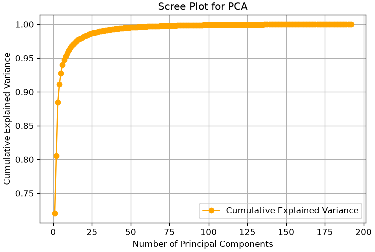
As we can see, truncating at the first component allows us to retain about 72% of the information, truncating at the second allows us to retain about 80%, and so on, up to 32 components, which allow us to retain about 99% of the information. Now let’s see how to compress and reconstruct the image. We will choose the first 32 components, preserving 99% of the information.
If we do so, and then project the tiles to the compressed space each tile will be represented by only 32 numbers. This will lead to the following savings in space:
pca = PCA(n_components=32)
pca.fit(tiles)
compressed_tiles = pca.transform(tiles)
compressed_tiles.shape
print("Space saved in the compression: {:0.2f}%".format(100-100*compressed_tiles.size/tiles.size))Space saved in the compression: 83.33%We can reconstruct the original image by applying the inverse PCA transformation to the compressed patches. The result will be as follows:
reconstructed_tiles = pca.inverse_transform(compressed_tiles)
reconstructed_tiles.shape
reconstructed_tiles = (reconstructed_tiles-reconstructed_tiles.min())\
/(reconstructed_tiles.max()-reconstructed_tiles.min())*255
reconstructed_tiles=reconstructed_tiles.astype('uint8')
reconstructed_flower=reconstructed_tiles.ravel().reshape(flower.shape)
plt.figure(figsize=(12,8))
plt.subplot(1,2,1)
plt.title('Original')
plt.imshow(flower)
plt.axis('off')
plt.subplot(1,2,2)
plt.title('Reconstructed')
plt.imshow(reconstructed_flower)
plt.axis('off')
plt.show()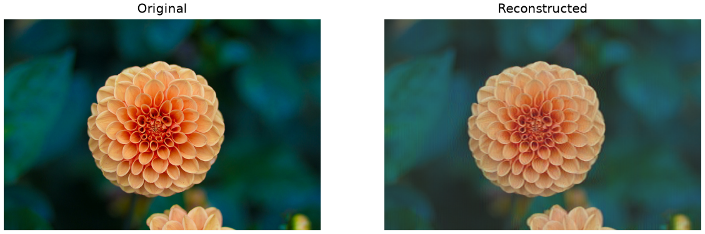
The plot below shows how the reconstruction quality increases when more components are used:
def compress(n_components):
pca = PCA(n_components=n_components)
pca.fit(tiles)
compressed_tiles = pca.transform(tiles)
compressed_tiles.shape
saved_sapce = 100-100*compressed_tiles.size/tiles.size
reconstructed_tiles = pca.inverse_transform(compressed_tiles)
reconstructed_tiles.shape
reconstructed_tiles = (reconstructed_tiles-reconstructed_tiles.min())\
/(reconstructed_tiles.max()-reconstructed_tiles.min())*255
reconstructed_tiles=reconstructed_tiles.astype('uint8')
reconstructed_flower=reconstructed_tiles.ravel().reshape(flower.shape)
return reconstructed_flower, saved_sapce
plt.figure(figsize=(16,4))
for i,c in enumerate([1,8,32,64,128,192]):
plt.subplot(1,6,i+1)
reconstructed, saved_space = compress(c)
plt.imshow(reconstructed)
plt.axis('off')
plt.title(f"M={c} Comp: {saved_space:0.2f}%")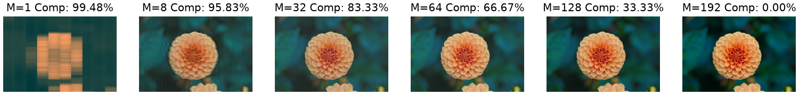
Eigenfaces
When PCA is applied to a dataset of faces, the Principal Components (the eigenvectors) are no longer abstract directions; they can be visualized as “ghostly” faces themselves, known as “Eigenfaces”.
Each Eigenface represents a fundamental “component” or “feature” of human faces in the dataset (e.g., “lighting from the left,” “presence of a nose,” “smiling vs. frowning”).
The Goal
- Load a dataset of 400 human faces. Each image is 64x64, meaning we have 4,096 features (pixels).
- Fit PCA to the dataset to find the “Eigenfaces.”
- Visualize these new “features.”
- Compress an image by reducing it from 4,096 dimensions to just 20.
- Reconstruct the face from the compressed 20-component version to see how much information we retained.
import numpy as np
import matplotlib.pyplot as plt
from sklearn.datasets import fetch_olivetti_faces
from sklearn.decomposition import PCA
from sklearn.preprocessing import StandardScaler
# 1. Load the faces dataset
# 400 images, each 64x64 (4096 features)
faces = fetch_olivetti_faces()
X = faces.data
y = faces.target
print(f"Faces dataset shape: {X.shape}")
# 2. Fit PCA
# We'll ask for 20 components
n_components = 20
# whiten=True scales the components, often better for visualization
pca = PCA(n_components=n_components, whiten=True, random_state=42)
pca.fit(X)
# The "Eigenfaces" are just the principal components (the eigenvectors)
eigenfaces = pca.components_
# The "average face" that PCA centers the data on
mean_face = pca.mean_
print(f"Eigenfaces (components) shape: {eigenfaces.shape}")Faces dataset shape: (400, 4096)
Eigenfaces (components) shape: (20, 4096)Visualizing the Principal Components (Eigenfaces)
Let’s plot the “average face” (the mean) and the first 12 “Eigenfaces” (PC1, PC2, etc.). These are the fundamental “building blocks” of all the faces in the dataset.
def plot_gallery(images, titles, h, w, n_row=3, n_col=4):
"""Helper function to plot a gallery of portraits"""
plt.figure(figsize=(1.8 * n_col, 2.4 * n_row))
plt.subplots_adjust(bottom=0, left=.01, right=.99, top=.90, hspace=.35)
for i in range(n_row * n_col):
plt.subplot(n_row, n_col, i + 1)
plt.imshow(images[i].reshape((h, w)), cmap=plt.cm.gray)
plt.title(titles[i], size=12)
plt.xticks(())
plt.yticks(())
# 1. Plot the "average face" (the mean that PCA subtracted)
plt.figure(figsize=(4,4))
plt.imshow(mean_face.reshape(64, 64), cmap=plt.cm.gray)
plt.title("Average Face (Mean)")
plt.xticks(())
plt.yticks(())
plt.show()
# 2. Plot the gallery of the first 12 eigenfaces
eigenface_titles = [f"Eigenface {i+1}" for i in range(eigenfaces.shape[0])]
plot_gallery(eigenfaces, eigenface_titles, 64, 64)
plt.show()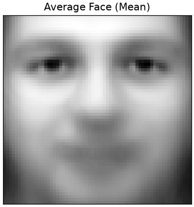
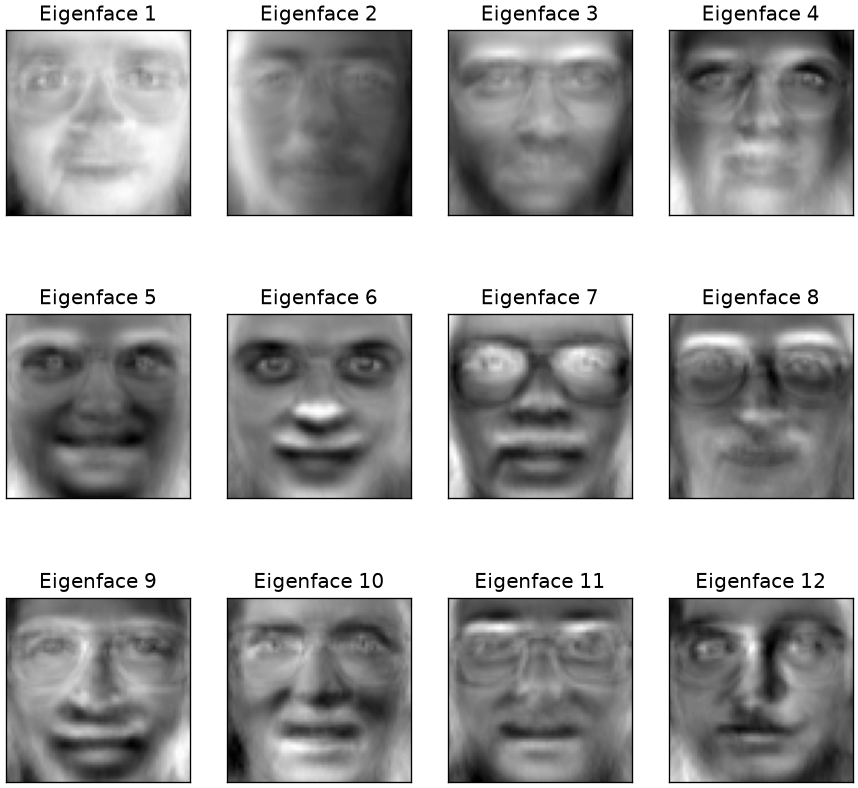
Interpretation
As you can see, the “Eigenfaces” are not faces, but “ghostly” components.
- PC1 (“Eigenface 1”) captures the main component of variance: the direction of the lighting (light from the left vs. light from the right).
- Other components learn to represent other key features: “wearing glasses vs. not,” “smiling vs. frowning,” “wide nose vs. narrow nose,” etc.
Data Compression and Reconstruction
Now for the magic. We can take any face and “compress” it by describing it as a combination of these eigenfaces.
We will take one test face and show its reconstruction using just 5, 10, 15 and 20 components.
# Take one face from the dataset
test_face = X[0]
# 1. Transform the face into its "component weights"
# This "compresses" the 4096-pixel vector into a 20-number vector
face_weights = pca.transform(test_face.reshape(1, -1))
# 2. Reconstruct the face using different numbers of components
n_comps_to_try = [5, 10, 15, 20]
reconstructed_faces = []
for n in n_comps_to_try:
# Get the weights for just the first 'n' components
weights_n = face_weights[0, :n]
# Get the "eigenfaces" (components) for just the first 'n'
components_n = pca.components_[:n, :]
# "Rebuild" the face by summing the (weight * eigenface)
# We must also add back the "average face" we subtracted
reconstructed = np.dot(weights_n, components_n) + pca.mean_
reconstructed_faces.append(reconstructed)
# --- Plot the results ---
plt.figure(figsize=(12, 2.8))
plt.subplot(1, 5, 1)
plt.imshow(test_face.reshape(64, 64), cmap=plt.cm.gray)
plt.title("Original (4096D)")
plt.xticks(())
plt.yticks(())
for i, face in enumerate(reconstructed_faces):
plt.subplot(1, 5, i + 2)
plt.imshow(face.reshape(64, 64), cmap=plt.cm.gray)
plt.title(f"Reconstructed (K={n_comps_to_try[i]})")
plt.xticks(())
plt.yticks(())
plt.suptitle("PCA for Image Compression and Reconstruction", fontsize=16)
plt.show()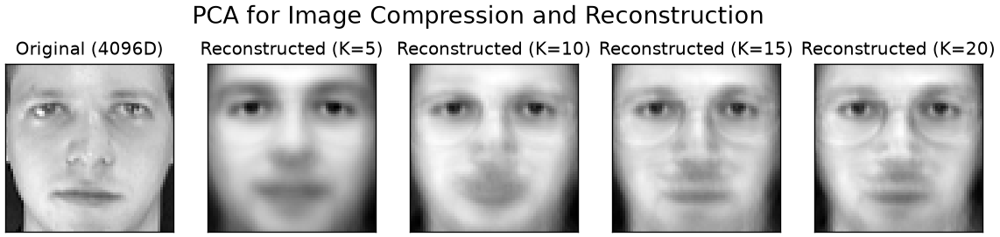
Are These “Eigenface” Features Actually Better?
So far, we’ve seen that PCA can compress a 4096-pixel image into a 20-number vector, and then reconstruct it. This is great for storage.
But is this new, 20-dimensional vector a better feature set for a machine learning model?
Let’s run a “bake-off” to find out. We will build a face recognition classifier (using KNN) and test it on two different feature sets:
- Baseline Model: KNN trained on the raw 4096-pixel vectors.
- PCA Model: KNN trained on our “smart” 20-component vectors.
Our Hypothesis: The PCA model will be faster to train (fewer features) and more accurate (less noise).
import numpy as np
import matplotlib.pyplot as plt
import time
from sklearn.datasets import fetch_olivetti_faces
from sklearn.model_selection import train_test_split
from sklearn.neighbors import KNeighborsClassifier
from sklearn.pipeline import Pipeline
from sklearn.preprocessing import StandardScaler
from sklearn.decomposition import PCA
from sklearn.metrics import classification_report, accuracy_score
# --- 1. Load the data ---
# This was the missing step. We must load the data first.
faces = fetch_olivetti_faces()
X_faces = faces.data
y_faces = faces.target
print(f"Loaded faces dataset. Shape: {X_faces.shape}")
# --- 2. Create our single Train/Test split ---
X_train, X_test, y_train, y_test = train_test_split(
X_faces, y_faces, test_size=0.3, random_state=42, stratify=y_faces
)
print(f"Training on {X_train.shape[0]} samples, testing on {X_test.shape[0]} samples.")Loaded faces dataset. Shape: (400, 4096)
Training on 280 samples, testing on 120 samples.Baseline: KNN on 4096 Raw Pixels
First, our baseline. We build a pipeline that scales the 4096 pixel values and then runs the KNN classifier.
# 1. Create a simple pipeline
pipe_knn_raw = Pipeline([
('scaler', StandardScaler()),
('knn', KNeighborsClassifier(n_neighbors=5))
])
# 2. Fit and time the model
print("Training KNN on 4096 RAW pixel features...")
start_time = time.time()
pipe_knn_raw.fit(X_train, y_train)
end_time = time.time()
# 3. Evaluate on the test set
y_pred_raw = pipe_knn_raw.predict(X_test)
acc_raw = accuracy_score(y_test, y_pred_raw)
time_raw = end_time - start_time
print(f" Accuracy: {acc_raw*100:.2f}%")Training KNN on 4096 RAW pixel features...
Accuracy: 79.17%Model 2: KNN on 20 “Smart” PCA Features
Now, we’ll build a complete pipeline that does all the steps at once:
- Scales the data.
- Performs PCA to reduce 4096D \to 20D.
- Trains the KNN classifier on the new 20D features.
# 1. Create the full PCA pipeline
pipe_knn_pca = Pipeline([
('scaler', StandardScaler()),
('pca', PCA(n_components=20, whiten=True, random_state=42)),
('knn', KNeighborsClassifier(n_neighbors=5))
])
# 2. Fit and time the model
print("Training KNN on 20 PCA features...")
start_time = time.time()
pipe_knn_pca.fit(X_train, y_train)
end_time = time.time()
# 3. Evaluate on the test set
y_pred_pca = pipe_knn_pca.predict(X_test)
acc_pca = accuracy_score(y_test, y_pred_pca)
time_pca = end_time - start_time
print(f" Accuracy: {acc_pca*100:.2f}%")Training KNN on 20 PCA features...
Accuracy: 83.33%Conclusion
Let’s look at the results.
| Model | Features | Accuracy |
|---|---|---|
| Baseline | 4096 raw pixels | 79.17% |
| PCA Model | 20 PCA components | 83.33% |
PCA didn’t just compress the data; it improved it. By creating a cleaner, low-dimensional feature space, it allowed our simple KNN classifier to find the true patterns and make far more accurate predictions.
Exercises
- How many components? Plot the cumulative explained variance for a dataset of your choice. How many components reach 90%? Is the scree plot’s elbow in the same place?
- Scaling is not optional. Run PCA with and without standardising, on data whose variables have very different units. Compare the first component’s loadings and explain the difference.
- Read the loadings. Produce the loading plot for the first two components and give each component a name in the language of the problem. Then state how confident you are in those names.
- Reconstruction. Project a dataset onto k components and back. Plot the reconstruction error against k. Where does it stop falling quickly, and what is lost below that point?
- PCA before a model. Compare a classifier on the raw features against the same classifier on the first k principal components, by cross-validation. Does reducing help, hurt, or neither — and does the answer depend on k?
- When PCA misleads. Construct data where the direction of greatest variance is irrelevant to the question you care about. Show that the first component is useless, and say what you would use instead.
References
- Parts of Chapter 12 of [1]
[1] Bishop, Christopher M., and Nasser M. Nasrabadi. Pattern recognition and machine learning. Vol. 4. No. 4. New York: springer, 2006.